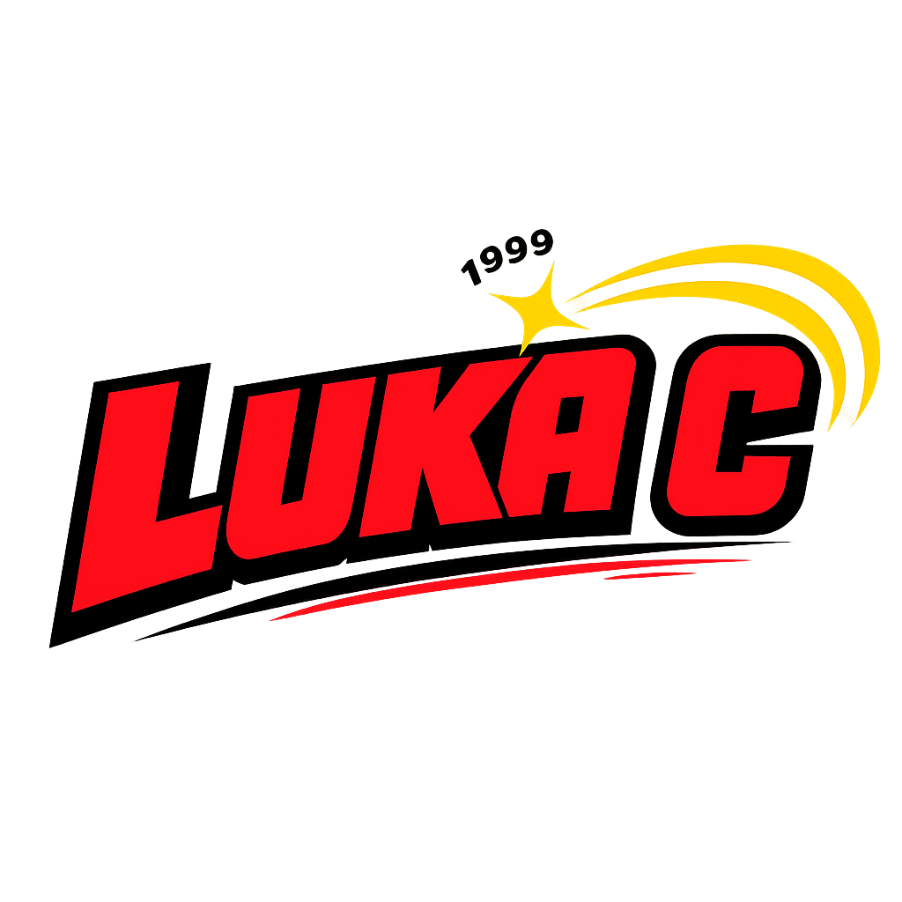
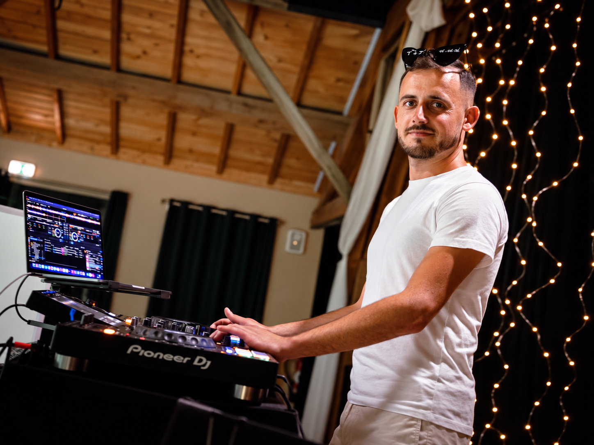

Une soirée construite autour de vous
Ambiance musicale, ouverture de bal, moments forts, sonorisation du vin d’honneur et animations selon vos envies.

Demander un devis →Saint-Dizier • Lac du Der • Haute-Marne
Basé dans le secteur, j’accompagne mariages, anniversaires, soirées privées, événements professionnels et rendez-vous festifs autour de Saint-Dizier et du Lac du Der. L’objectif : une ambiance adaptée à vos invités, à votre lieu et au rythme de votre événement.

Des formats variés
Chaque événement demande une approche différente. La musique, l’animation et le matériel sont adaptés au format de la soirée plutôt que d’appliquer la même recette partout.
Ambiance musicale, ouverture de bal, moments forts, sonorisation du vin d’honneur et animations selon vos envies.
Une programmation souple qui évolue avec la piste, des classiques aux titres actuels, avec ou sans animations.
Soirées d’entreprise, associations, événements locaux, karaoké, blind tests et formats festifs personnalisés.
Secteur d’intervention
J’interviens régulièrement dans le secteur de Saint-Dizier et du Lac du Der, avec des déplacements possibles dans les départements voisins selon le projet.
Giffaumont-Champaubert, Montier-en-Der et les communes du secteur du lac, pour des événements privés comme pour des animations ouvertes au public.
Saint-Dizier, Wassy, Haute-Marne, ainsi que les secteurs voisins de la Marne et de la Meuse selon la date et le type de prestation.
Décris-moi ton événement et je te répondrai avec une proposition adaptée.